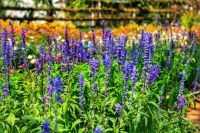
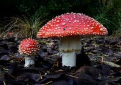
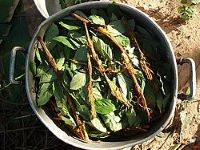

Mecanismo y Origen: Planta endémica de la Oaxaca de Juárez, México. Su principio activo es la salvinorina-A, uno de los alucinógenos naturales más potentes descubiertos.
Hábitat: Requiere alta humedad, sombra parcial y suelos muy ricos en materia orgánica. Rara vez produce semillas viables; se propaga casi siempre por esquejes.
Efectos: Provoca estados alterados de conciencia intensos y de corta duración, interactuando con los receptores kappa-opioides del cerebro.
Estatus: Su regulación varía drásticamente entre la investigación científica internacional y restricciones locales.

Etnobotánica del Hongo: Hongo basidiomiceto icónico por su sombrero rojo con manchas blancas. Utilizado históricamente por chamanes en Siberia.
Componentes: Contiene compuestos psicoactivos como el ácido iboténico y el muscimol, diferenciándose de los hongos psilocibios comunes.
Toxicidad y Cuidado: Requiere un proceso riguroso de descarbonización para evitar su alta toxicidad gastrointestinal antes de cualquier estudio de sus propiedades disociativas.
Simbiosis: Crece exclusivamente en micorrizas, asociado a las raíces de árboles como pinos y abedules.

Sinergia Química: Conocida como la "liana del alma" en la Amazonía. No actúa sola: se combina con hojas de Psychotria viridis (chacruna) para ser activa en el organismo.
Mecanismo: La liana contiene alcaloides de harmala que actúan como inhibidores de la monoaminooxidasa (IMAO), permitiendo que la DMT de la chacruna llegue al cerebro al ser ingerida oralmente.
Uso Tradicional: Empleada en rituales de medicina tradicional sudamericana con propósitos de purga física, introspección psicológica profunda y conexión espiritual.
Sostenibilidad: Debido al auge del turismo espiritual, la planta está bajo presión ecológica por sobreexplotación en su hábitat selvático nativo.